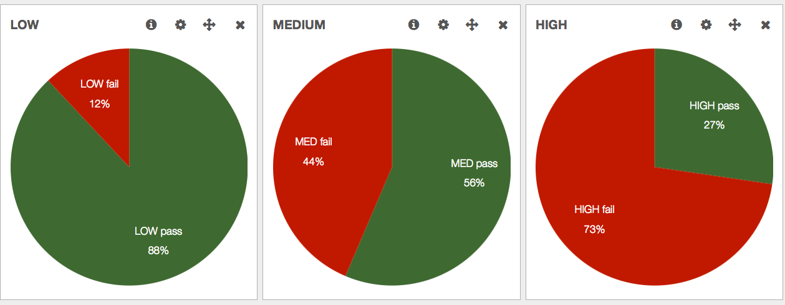
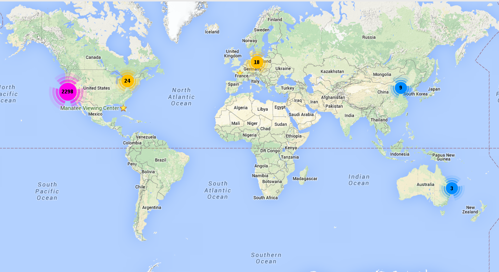

MIG
Mozilla InvestiGator
Distributed and Real-Time Digital Forensics at the Speed of the Cloud
Link to this presentation: https://goo.gl/qxrGsa
$whoami
Julien Vehent, Mozilla Security
|

|
Real-Time systems investigation
Goal #1: Detecting IOCs
3ce55c6994101faec00b5b7c2fee494f
Goal #2: covering the small mistakes
git commit -a . && git push github master


$ mig file -path / -name "^\.boto$" -content "abcdef123456"
Goal #3: Measuring security compliance
Mozilla's startup mindset
|
|
|
Incident Response at Mozilla

Security at the perimeter
does not work
When your infrastructure
lives all over the internet
MIG's core principles
- Fast & Massively Distributed investigations.
- Simple to deploy across all operating systems.
- Strong Security! All actions are signed and recorded.
- Do not retrieve raw data, respect Privacy.
Demos!

Got any private keys in those home folders?
Is that botnet IP connected anywhere?
Scan processes memories for a regex
Measuring security compliance
{
"module": "file",
"parameters": {
"searches": {
"checkforverboselogging": {
"paths": [
"/etc/ssh/sshd_config"
],
"contents": [
"(?i)^loglevel verbose$"
]
},
"checkpasswordusageisoff": {
"paths": [
"/etc/ssh/sshd_config"
],
"contents": [
"(?i)^passwordauthentication no$"
]
}
}
}
}
Scribe: Revisiting Vulnerability Management
{ "objects": [ {
"object": "libnss3-package",
"package": {
"name": "libnss3:amd64"
}
}
],
"tests": [ {
"test": "libnss3 test",
"object": "libnss3-package",
"evr": {
"operation": "<",
"value": "2:3.19.2"
}
}
]
}
Writing actions by hand is easy
{
"name": "Shellshock IOCs (nginx and more)",
"target": "environment->>'os' IN ('linux','darwin') AND mode='daemon'",
"operations": [
{
"module": "file",
"parameters": {
"searches": {
"iocs": {
"paths": [
"/usr/bin",
"/usr/sbin",
"/bin",
"/sbin",
"/tmp",
"/var/tmp"
],
"sha256": [
"73b0d95541c84965fa42c3e257bb349957b3be626dec9d55efcc6ebcba6fa489",
"ae3b4f296957ee0a208003569647f04e585775be1f3992921af996b320cf520b",
"2d3e0be24ef668b85ed48e81ebb50dce50612fb8dce96879f80306701bc41614",
"2ff32fcfee5088b14ce6c96ccb47315d7172135b999767296682c368e3d5ccac",
"1f5f14853819800e740d43c4919cc0cbb889d182cc213b0954251ee714a70e4b",
"2bc9a2f7374308d9bb97b8d116177d53eaca060b562f6f66f5dd1af71c9d7a66"
],
"contents": [
"/bin/busybox;echo -e '\\\\147\\\\141\\\\171\\\\146\\\\147\\\\164'",
"legend.rocks"
],
"names": [
"legend.txt"
]
}
}
}
},
{
"module": "netstat",
"parameters": {
"connectedip": [
"108.162.197.26",
"162.253.66.76",
"89.238.150.154",
"198.46.135.194",
"166.78.61.142",
"23.235.43.31",
"54.228.25.245",
"23.235.43.21",
"23.235.43.27",
"198.58.106.99",
"23.235.43.25",
"23.235.43.23",
"23.235.43.29",
"108.174.50.137",
"201.67.234.45",
"128.199.216.68",
"75.127.84.182",
"82.118.242.223",
"24.251.197.244",
"166.78.61.142",
"119.110.98.93",
"2.0.1.5"
]
}
}
],
"description": {
"author": "Julien Vehent",
"email": "ulfr@mozilla.com",
"revision": 201410031030
},
"syntaxversion": 2
}Extra goodies: Visualizing results on a map
The faster we run investigations,
the more we will investigate.
- bob left the company, did we revoke all his accesses?
- massive libstuff1 vulnerability, is it used anywhere?
- found IP 13.37.66.66 brute forcing the VPN, check other nodes to see if it's connected
- jean-kevin put some AWS key on pastebin, is it configured anywhere?
- anyone remembers that weird host that was running an anonymous proxy?
GO is Fantastic!
One static binary, no dependencies.
Configuration is built-in or deployed via provisioning.

Security of the Agent
Agent only runs something if these conditions are met:
- action has valid PGP signatures
- issued by trusted investigators
- with ACL accesses to a given module
multiple signatures required to run sensitive modules
Agent ACLs
The weights of each investigator providing a valid signature are summed, and if the total weight is equal or higher than the minimum weight, the operation is considered valid.
TotalWeight = Weight[Alice} + Weight[Bob]
if TotalWeight >= MinimumWeight { run module }
Questions?
## ## _.---._ .---.
# # # /-\ ---|| | /\ __...---' .---. '---'-. '.
# #| | / || | /--\ .-''__.--' _.'( | )'. '. '._ :
# # \_/ ---| \_ \_/ \ .'__-'_ .--'' ._'---'_.-. '. '-'.
### ~ -._ -._''---. -. '-._ '.
# |\ |\ /---------| ~ -.._ _ _ _ ..-_ '. '-._''--.._
# | \| \ / |- |__ | | -~ -._ '-. -. '-._''--.._.--''.
###| \ \/ ---__| | | ~ ~-.__ -._ '-.__ '. '.
##### ~~ ~---...__ _ ._ .' '.
# /\ --- /-\ |--|---- ~ ~--.....--~
# ### /--\ | | ||-\ //
#####/ \ | \_/ | \//__